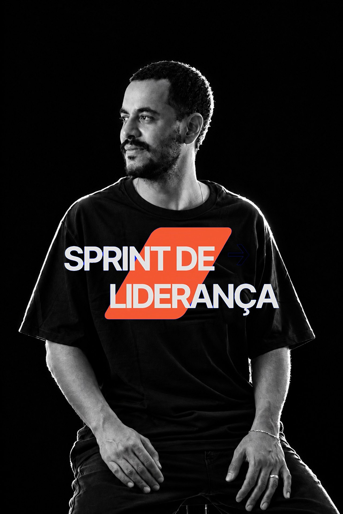

Mensagens
Mensagens disponíveis no nosso canal do YouTube.
Ouvir mensagens →A fé passa pela cabeça antes de chegar no coração.
Davi Jardim é casado com Jamila Jardim e pai de Tito e José. Juntos, pastoreiam os projetos de juventude da Primeira Igreja Batista de Marília (PIB Marília), dedicando-se ao discipulado, à formação de líderes e ao desenvolvimento de uma juventude firmada na Palavra de Deus.
É fundador do Ministério de Adolescentes Multi e da Juventude EKKO, um movimento que busca formar uma juventude bíblica, profética e missional, comprometida em conhecer a Deus e tornar Jesus conhecido. Há mais de nove anos, dedica-se ao discipulado de jovens e à formação de líderes, incentivando uma fé profunda, uma vida de oração e uma atuação missionária que ultrapassa as paredes da igreja.
Também é idealizador da Mentoria Sprint, iniciativa voltada à formação e capacitação de líderes de jovens. Por meio da pregação, do ensino bíblico e da mentoria, sua atuação tem como propósito equipar uma nova geração de líderes para servir à Igreja e anunciar o Evangelho com fidelidade, criatividade e paixão.
Mensagens disponíveis no nosso canal do YouTube.
Ouvir mensagens →
O próximo nível da sua liderança de jovens começa aqui.
Conhecer o curso →Faça o seu convite para cultos e conferências.
Fazer um convite →